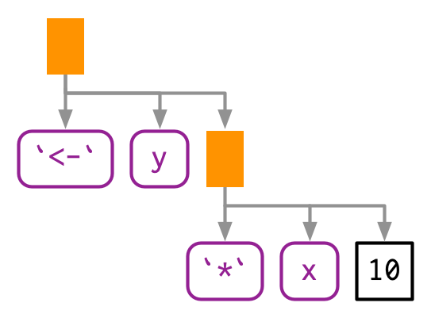

18 Expressions
18.1 Introduction
To compute on the language, we first need to understand its structure. That requires some new vocabulary, some new tools, and some new ways of thinking about R code. The first of these is the distinction between an operation and its result. Take the following code, which multiplies a variable x by 10 and saves the result to a new variable called y. It doesnt work because we havent defined a variable called x:
y <- x * 10
#> Error in eval(expr, envir, enclos): object 'x' not foundIt would be nice if we could capture the intent of the code without executing it. In other words, how can we separate our description of the action from the action itself?
One way is to use rlang::expr():
z <- rlang::expr(y <- x * 10)
z
#> y <- x * 10expr() returns an expression, an object that captures the structure of the code without evaluating it (i.e.running it). If you have an expression, you can evaluate it with base::eval():
x <- 4
eval(z)
y
#> [1] 40The focus of this chapter is the data structures that underlie expressions. Mastering this knowledge will allow you to inspect and modify captured code, and to generate code with code. Well come back to expr() in Chapter 19, and to eval() in Chapter 20.
Outline
Section 18.2 introduces the idea of the abstract syntax tree (AST), and reveals the tree like structure that underlies all R code.
Section 18.3 dives into the details of the data structures that underpin the AST: constants, symbols, and calls, which are collectively known as expressions.
Section 18.4 covers parsing, the act of converting the linear sequence of character in code into the AST, and uses that idea to explore some details of Rs grammar.
Section 18.5 shows you how you can use recursive functions to compute on the language, writing functions that compute with expressions.
Section 18.6 circles back to three more specialised data structures: pairlists, missing arguments, and expression vectors.
18.2 Abstract syntax trees
Expressions are also called abstract syntax trees (ASTs) because the structure of code is hierarchical and can be naturally represented as a tree. Understanding this tree structure is crucial for inspecting and modifying expressions (i.e.metaprogramming).
18.2.1 Drawing
Well start by introducing some conventions for drawing ASTs, beginning with a simple call that shows their main components: f(x, "y", 1). Ill draw trees in two ways87:
By hand (i.e.with OmniGraffle):

With
lobstr::ast():lobstr::ast(f(x, "y", 1)) #> f #> x #> "y" #> 1
Both approaches share conventions as much as possible:
The leaves of the tree are either symbols, like
fandx, or constants, like1or"y". Symbols are drawn in purple and have rounded corners. Constants have black borders and square corners. Strings and symbols are easily confused, so strings are always surrounded in quotes.The branches of the tree are call objects, which represent function calls, and are drawn as orange rectangles. The first child (
f) is the function that gets called; the second and subsequent children (x,"y", and1) are the arguments to that function.
Colours will be shown when you call ast(), but do not appear in the book for complicated technical reasons.
The above example only contained one function call, making for a very shallow tree. Most expressions will contain considerably more calls, creating trees with multiple levels. For example, consider the AST for f(g(1, 2), h(3, 4, i())):

lobstr::ast(f(g(1, 2), h(3, 4, i())))
#> f
#> g
#> 1
#> 2
#> h
#> 3
#> 4
#> iYou can read the hand-drawn diagrams from left-to-right (ignoring vertical position), and the lobstr-drawn diagrams from top-to-bottom (ignoring horizontal position). The depth within the tree is determined by the nesting of function calls. This also determines evaluation order, as evaluation generally proceeds from deepest-to-shallowest, but this is not guaranteed because of lazy evaluation (Section 6.5). Also note the appearance of i(), a function call with no arguments; its a branch with a single (symbol) leaf.
18.2.2 Non-code components
You might have wondered what makes these abstract syntax trees. They are abstract because they only capture important structural details of the code, not whitespace or comments:
ast(
f(x, y) # important!
)
#> f
#> x
#> yTheres only one place where whitespace affects the AST:
lobstr::ast(y <- x)
#> `<-`
#> y
#> x
lobstr::ast(y < -x)
#> `<`
#> y
#> `-`
#> x18.2.3 Infix calls
Every call in R can be written in tree form because any call can be written in prefix form (Section 6.8.1). Take y <- x * 10 again: what are the functions that are being called? It is not as easy to spot as f(x, 1) because this expression contains two infix calls: <- and *. That means that these two lines of code are equivalent:
y <- x * 10
`<-`(y, `*`(x, 10))And they both have this AST88:

lobstr::ast(y <- x * 10)
#> `<-`
#> y
#> `*`
#> x
#> 10There really is no difference between the ASTs, and if you generate an expression with prefix calls, R will still print it in infix form:
expr(`<-`(y, `*`(x, 10)))
#> y <- x * 10The order in which infix operators are applied is governed by a set of rules called operator precedence, and well use lobstr::ast() to explore them in Section 18.4.1.
18.2.4 Exercises
Reconstruct the code represented by the trees below:
#> f #> g #> h #> `+` #> `+` #> 1 #> 2 #> 3 #> `*` #> `(` #> `+` #> x #> y #> zDraw the following trees by hand and then check your answers with
lobstr::ast().f(g(h(i(1, 2, 3)))) f(1, g(2, h(3, i()))) f(g(1, 2), h(3, i(4, 5)))Whats happening with the ASTs below? (Hint: carefully read
?"^".)lobstr::ast(`x` + `y`) #> `+` #> x #> y lobstr::ast(x ** y) #> `^` #> x #> y lobstr::ast(1 -> x) #> `<-` #> x #> 1What is special about the AST below? (Hint: re-read Section 6.2.1.)
lobstr::ast(function(x = 1, y = 2) {}) #> `function` #> x = 1 #> y = 2 #> `{` #> <inline srcref>What does the call tree of an
ifstatement with multipleelse ifconditions look like? Why?
18.3 Expressions
Collectively, the data structures present in the AST are called expressions. An expression is any member of the set of base types created by parsing code: constant scalars, symbols, call objects, and pairlists. These are the data structures used to represent captured code from expr(), and is_expression(expr(...)) is always true89. Constants, symbols and call objects are the most important, and are discussed below. Pairlists and empty symbols are more specialised and well come back to them in Sections 18.6.1 and Section 18.6.2.
NB: In base R documentation expression is used to mean two things. As well as the definition above, expression is also used to refer to the type of object returned by expression() and parse(), which are basically lists of expressions as defined above. In this book Ill call these expression vectors, and Ill come back to them in Section 18.6.3.
18.3.1 Constants
Scalar constants are the simplest component of the AST. More precisely, a constant is either NULL or a length-1 atomic vector (or scalar, Section 3.2.1) like TRUE, 1L, 2.5 or "x". You can test for a constant with rlang::is_syntactic_literal().
Constants are self-quoting in the sense that the expression used to represent a constant is the same constant:
identical(expr(TRUE), TRUE)
#> [1] TRUE
identical(expr(1), 1)
#> [1] TRUE
identical(expr(2L), 2L)
#> [1] TRUE
identical(expr("x"), "x")
#> [1] TRUE18.3.2 Symbols
A symbol represents the name of an object like x, mtcars, or mean. In base R, the terms symbol and name are used interchangeably (i.e.is.name() is identical to is.symbol()), but in this book I used symbol consistently because name has many other meanings.
You can create a symbol in two ways: by capturing code that references an object with expr(), or turning a string into a symbol with rlang::sym():
expr(x)
#> x
sym("x")
#> xYou can turn a symbol back into a string with as.character() or rlang::as_string(). as_string() has the advantage of clearly signalling that youll get a character vector of length 1.
as_string(expr(x))
#> [1] "x"You can recognise a symbol because its printed without quotes, str() tells you that its a symbol, and is.symbol() is TRUE:
str(expr(x))
#> symbol x
is.symbol(expr(x))
#> [1] TRUEThe symbol type is not vectorised, i.e.a symbol is always length 1. If you want multiple symbols, youll need to put them in a list, using (e.g.) rlang::syms().
18.3.3 Calls
A call object represents a captured function call. Call objects are a special type of list90 where the first component specifies the function to call (usually a symbol), and the remaining elements are the arguments for that call. Call objects create branches in the AST, because calls can be nested inside other calls.
You can identify a call object when printed because it looks just like a function call. Confusingly typeof() and str() print language91 for call objects, but is.call() returns TRUE:
lobstr::ast(read.table("important.csv", row.names = FALSE))
#> read.table
#> "important.csv"
#> row.names = FALSE
x <- expr(read.table("important.csv", row.names = FALSE))
typeof(x)
#> [1] "language"
is.call(x)
#> [1] TRUE18.3.3.1 Subsetting
Calls generally behave like lists, i.e.you can use standard subsetting tools. The first element of the call object is the function to call, which is usually a symbol:
x[[1]]
#> read.table
is.symbol(x[[1]])
#> [1] TRUEThe remainder of the elements are the arguments:
as.list(x[-1])
#> [[1]]
#> [1] "important.csv"
#>
#> $row.names
#> [1] FALSEYou can extract individual arguments with [[ or, if named, $:
x[[2]]
#> [1] "important.csv"
x$row.names
#> [1] FALSEYou can determine the number of arguments in a call object by subtracting 1 from its length:
length(x) - 1
#> [1] 2Extracting specific arguments from calls is challenging because of Rs flexible rules for argument matching: it could potentially be in any location, with the full name, with an abbreviated name, or with no name. To work around this problem, you can use rlang::call_standardise() which standardises all arguments to use the full name:
rlang::call_standardise(x)
#> read.table(file = "important.csv", row.names = FALSE)(NB: If the function uses ... its not possible to standardise all arguments.)
Calls can be modified in the same way as lists:
x$header <- TRUE
x
#> read.table("important.csv", row.names = FALSE, header = TRUE)18.3.3.2 Function position
The first element of the call object is the function position. This contains the function that will be called when the object is evaluated, and is usually a symbol92:
lobstr::ast(foo())
#> fooWhile R allows you to surround the name of the function with quotes, the parser converts it to a symbol:
lobstr::ast("foo"())
#> fooHowever, sometimes the function doesnt exist in the current environment and you need to do some computation to retrieve it: for example, if the function is in another package, is a method of an R6 object, or is created by a function factory. In this case, the function position will be occupied by another call:
lobstr::ast(pkg::foo(1))
#> `::`
#> pkg
#> foo
#> 1
lobstr::ast(obj$foo(1))
#> `$`
#> obj
#> foo
#> 1
lobstr::ast(foo(1)(2))
#> foo
#> 1
#> 2
18.3.3.3 Constructing
You can construct a call object from its components using rlang::call2(). The first argument is the name of the function to call (either as a string, a symbol, or another call). The remaining arguments will be passed along to the call:
call2("mean", x = expr(x), na.rm = TRUE)
#> mean(x = x, na.rm = TRUE)
call2(expr(base::mean), x = expr(x), na.rm = TRUE)
#> base::mean(x = x, na.rm = TRUE)Infix calls created in this way still print as usual.
call2("<-", expr(x), 10)
#> x <- 10Using call2() to create complex expressions is a bit clunky. Youll learn another technique in Chapter 19.
18.3.4 Summary
The following table summarises the appearance of the different expression subtypes in str() and typeof():
str() |
typeof() |
|
|---|---|---|
| Scalar constant | logi/int/num/chr |
logical/integer/double/character |
| Symbol | symbol |
symbol |
| Call object | language |
language |
| Pairlist | Dotted pair list | pairlist |
| Expression vector | expression() |
expression |
Both base R and rlang provide functions for testing for each type of input, although the types covered are slightly different. You can easily tell them apart because all the base functions start with is. and the rlang functions start with is_.
| base | rlang | |
|---|---|---|
| Scalar constant | is_syntactic_literal() |
|
| Symbol | is.symbol() |
is_symbol() |
| Call object | is.call() |
is_call() |
| Pairlist | is.pairlist() |
is_pairlist() |
| Expression vector | is.expression() |
18.3.5 Exercises
Which two of the six types of atomic vector cant appear in an expression? Why? Similarly, why cant you create an expression that contains an atomic vector of length greater than one?
What happens when you subset a call object to remove the first element? e.g.
expr(read.csv("foo.csv", header = TRUE))[-1]. Why?Describe the differences between the following call objects.
x <- 1:10 call2(median, x, na.rm = TRUE) call2(expr(median), x, na.rm = TRUE) call2(median, expr(x), na.rm = TRUE) call2(expr(median), expr(x), na.rm = TRUE)rlang::call_standardise()doesnt work so well for the following calls. Why? What makesmean()special?call_standardise(quote(mean(1:10, na.rm = TRUE))) #> mean(x = 1:10, na.rm = TRUE) call_standardise(quote(mean(n = T, 1:10))) #> mean(x = 1:10, n = T) call_standardise(quote(mean(x = 1:10, , TRUE))) #> mean(x = 1:10, , TRUE)Why does this code not make sense?
x <- expr(foo(x = 1)) names(x) <- c("x", "y")Construct the expression
if(x > 1) "a" else "b"using multiple calls tocall2(). How does the code structure reflect the structure of the AST?
18.4 Parsing and grammar
Weve talked a lot about expressions and the AST, but not about how expressions are created from code that you type (like "x + y"). The process by which a computer language takes a string and constructs an expression is called parsing, and is governed by a set of rules known as a grammar. In this section, well use lobstr::ast() to explore some of the details of Rs grammar, and then show how you can transform back and forth between expressions and strings.
18.4.1 Operator precedence
Infix functions introduce two sources of ambiguity93. The first source of ambiguity arises from infix functions: what does 1 + 2 * 3 yield? Do you get 9 (i.e.(1 + 2) * 3), or 7 (i.e.1 + (2 * 3))? In other words, which of the two possible parse trees below does R use?

Programming languages use conventions called operator precedence to resolve this ambiguity. We can use ast() to see what R does:
lobstr::ast(1 + 2 * 3)
#> `+`
#> 1
#> `*`
#> 2
#> 3Predicting the precedence of arithmetic operations is usually easy because its drilled into you in school and is consistent across the vast majority of programming languages.
Predicting the precedence of other operators is harder. Theres one particularly surprising case in R: ! has a much lower precedence (i.e.it binds less tightly) than you might expect. This allows you to write useful operations like:
lobstr::ast(!x %in% y)
#> `!`
#> `%in%`
#> x
#> yR has over 30 infix operators divided into 18 precedence groups. While the details are described in ?Syntax, very few people have memorised the complete ordering. If theres any confusion, use parentheses!
lobstr::ast((1 + 2) * 3)
#> `*`
#> `(`
#> `+`
#> 1
#> 2
#> 3Note the appearance of the parentheses in the AST as a call to the ( function.
18.4.2 Associativity
The second source of ambiguity is introduced by repeated usage of the same infix function. For example, is 1 + 2 + 3 equivalent to (1 + 2) + 3 or to 1 + (2 + 3)? This normally doesnt matter because x + (y + z) == (x + y) + z, i.e.addition is associative, but is needed because some S3 classes define + in a non-associative way. For example, ggplot2 overloads + to build up a complex plot from simple pieces; this is non-associative because earlier layers are drawn underneath later layers (i.e.geom_point() + geom_smooth() does not yield the same plot as geom_smooth() + geom_point()).
In R, most operators are left-associative, i.e.the operations on the left are evaluated first:
lobstr::ast(1 + 2 + 3)
#> `+`
#> `+`
#> 1
#> 2
#> 3There are two exceptions: exponentiation and assignment.
lobstr::ast(2^2^3)
#> `^`
#> 2
#> `^`
#> 2
#> 3
lobstr::ast(x <- y <- z)
#> `<-`
#> x
#> `<-`
#> y
#> z18.4.3 Parsing and deparsing
Most of the time you type code into the console, and R takes care of turning the characters youve typed into an AST. But occasionally you have code stored in a string, and you want to parse it yourself. You can do so using rlang::parse_expr():
x1 <- "y <- x + 10"
x1
#> [1] "y <- x + 10"
is.call(x1)
#> [1] FALSE
x2 <- rlang::parse_expr(x1)
x2
#> y <- x + 10
is.call(x2)
#> [1] TRUEparse_expr() always returns a single expression. If you have multiple expression separated by ; or \n, youll need to use rlang::parse_exprs(). It returns a list of expressions:
x3 <- "a <- 1; a + 1"
rlang::parse_exprs(x3)
#> [[1]]
#> a <- 1
#>
#> [[2]]
#> a + 1If you find yourself working with strings containing code very frequently, you should reconsider your process. Read Chapter 19 and consider whether you can generate expressions using quasiquotation more safely.
The base equivalent to parse_exprs() is parse(). It is a little harder to use because its specialised for parsing R code stored in files. You need to supply your string to the text argument and it returns an expression vector (Section 18.6.3). I recommend turning the output into a list:
as.list(parse(text = x1))
#> [[1]]
#> y <- x + 10
The inverse of parsing is deparsing: given an expression, you want the string that would generate it. This happens automatically when you print an expression, and you can get the string with rlang::expr_text():
z <- expr(y <- x + 10)
expr_text(z)
#> [1] "y <- x + 10"Parsing and deparsing are not perfectly symmetric because parsing generates an abstract syntax tree. This means we lose backticks around ordinary names, comments, and whitespace:
cat(expr_text(expr({
# This is a comment
x <- `x` + 1
})))
#> {
#> x <- x + 1
#> }Be careful when using the base R equivalent, deparse(): it returns a character vector with one element for each line. Whenever you use it, remember that the length of the output might be greater than one, and plan accordingly.
18.4.4 Exercises
R uses parentheses in two slightly different ways as illustrated by these two calls:
f((1)) `(`(1 + 1)Compare and contrast the two uses by referencing the AST.
=can also be used in two ways. Construct a simple example that shows both uses.Does
-2^2yield 4 or -4? Why?What does
!1 + !1return? Why?Why does
x1 <- x2 <- x3 <- 0work? Describe the two reasons.Compare the ASTs of
x + y %+% zandx ^ y %+% z. What have you learned about the precedence of custom infix functions?What happens if you call
parse_expr()with a string that generates multiple expressions? e.g.parse_expr("x + 1; y + 1")What happens if you attempt to parse an invalid expression? e.g.
"a +"or"f())".deparse()produces vectors when the input is long. For example, the following call produces a vector of length two:expr <- expr(g(a + b + c + d + e + f + g + h + i + j + k + l + m + n + o + p + q + r + s + t + u + v + w + x + y + z)) deparse(expr)What does
expr_text()do instead?pairwise.t.test()assumes thatdeparse()always returns a length one character vector. Can you construct an input that violates this expectation? What happens?
18.5 Walking AST with recursive functions
To conclude the chapter Im going to use everything youve learned about ASTs to solve more complicated problems. The inspiration comes from the base codetools package, which provides two interesting functions:
findGlobals()locates all global variables used by a function. This can be useful if you want to check that your function doesnt inadvertently rely on variables defined in their parent environment.checkUsage()checks for a range of common problems including unused local variables, unused parameters, and the use of partial argument matching.
Getting all of the details of these functions correct is fiddly, so we wont fully develop the ideas. Instead well focus on the big underlying idea: recursion on the AST. Recursive functions are a natural fit to tree-like data structures because a recursive function is made up of two parts that correspond to the two parts of the tree:
The recursive case handles the nodes in the tree. Typically, youll do something to each child of a node, usually calling the recursive function again, and then combine the results back together again. For expressions, youll need to handle calls and pairlists (function arguments).
The base case handles the leaves of the tree. The base cases ensure that the function eventually terminates, by solving the simplest cases directly. For expressions, you need to handle symbols and constants in the base case.
To make this pattern easier to see, well need two helper functions. First we define expr_type() which will return constant for constant, symbol for symbols, call, for calls, pairlist for pairlists, and the type of anything else:
expr_type <- function(x) {
if (rlang::is_syntactic_literal(x)) {
"constant"
} else if (is.symbol(x)) {
"symbol"
} else if (is.call(x)) {
"call"
} else if (is.pairlist(x)) {
"pairlist"
} else {
typeof(x)
}
}
expr_type(expr("a"))
#> [1] "constant"
expr_type(expr(x))
#> [1] "symbol"
expr_type(expr(f(1, 2)))
#> [1] "call"Well couple this with a wrapper around the switch function:
switch_expr <- function(x, ...) {
switch(expr_type(x),
...,
stop("Don't know how to handle type ", typeof(x), call. = FALSE)
)
}With these two functions in hand, we can write a basic template for any function that walks the AST using switch() (Section 5.2.3):
recurse_call <- function(x) {
switch_expr(x,
# Base cases
symbol = ,
constant = ,
# Recursive cases
call = ,
pairlist =
)
}Typically, solving the base case is easy, so well do that first, then check the results. The recursive cases are trickier, and will often require some functional programming.
18.5.1 Finding F and T
Well start with a function that determines whether another function uses the logical abbreviations T and F because using them is often considered to be poor coding practice. Our goal is to return TRUE if the input contains a logical abbreviation, and FALSE otherwise.
Lets first find the type of T versus TRUE:
expr_type(expr(TRUE))
#> [1] "constant"
expr_type(expr(T))
#> [1] "symbol"TRUE is parsed as a logical vector of length one, while T is parsed as a name. This tells us how to write our base cases for the recursive function: a constant is never a logical abbreviation, and a symbol is an abbreviation if its F or T:
logical_abbr_rec <- function(x) {
switch_expr(x,
constant = FALSE,
symbol = as_string(x) %in% c("F", "T")
)
}
logical_abbr_rec(expr(TRUE))
#> [1] FALSE
logical_abbr_rec(expr(T))
#> [1] TRUEIve written logical_abbr_rec() function assuming that the input will be an expression as this will make the recursive operation simpler. However, when writing a recursive function its common to write a wrapper that provides defaults or makes the function a little easier to use. Here well typically make a wrapper that quotes its input (well learn more about that in the next chapter), so we dont need to use expr() every time.
logical_abbr <- function(x) {
logical_abbr_rec(enexpr(x))
}
logical_abbr(T)
#> [1] TRUE
logical_abbr(FALSE)
#> [1] FALSENext we need to implement the recursive cases. Here we want to do the same thing for calls and for pairlists: recursively apply the function to each subcomponent, and return TRUE if any subcomponent contains a logical abbreviation. This is made easy by purrr::some(), which iterates over a list and returns TRUE if the predicate function is true for any element.
logical_abbr_rec <- function(x) {
switch_expr(x,
# Base cases
constant = FALSE,
symbol = as_string(x) %in% c("F", "T"),
# Recursive cases
call = ,
pairlist = purrr::some(x, logical_abbr_rec)
)
}
logical_abbr(mean(x, na.rm = T))
#> [1] TRUE
logical_abbr(function(x, na.rm = T) FALSE)
#> [1] TRUE18.5.2 Finding all variables created by assignment
logical_abbr() is relatively simple: it only returns a single TRUE or FALSE. The next task, listing all variables created by assignment, is a little more complicated. Well start simply, and then make the function progressively more rigorous.
We start by looking at the AST for assignment:
ast(x <- 10)
#> `<-`
#> x
#> 10Assignment is a call object where the first element is the symbol <-, the second is the name of variable, and the third is the value to be assigned.
Next, we need to decide what data structure were going to use for the results. Here I think it will be easiest if we return a character vector. If we return symbols, well need to use a list() and that makes things a little more complicated.
With that in hand we can start by implementing the base cases and providing a helpful wrapper around the recursive function. Here the base cases are straightforward because we know that neither a symbol nor a constant represents assignment.
find_assign_rec <- function(x) {
switch_expr(x,
constant = ,
symbol = character()
)
}
find_assign <- function(x) find_assign_rec(enexpr(x))
find_assign("x")
#> character(0)
find_assign(x)
#> character(0)Next we implement the recursive cases. This is made easier by a function that should exist in purrr, but currently doesnt. flat_map_chr() expects .f to return a character vector of arbitrary length, and flattens all results into a single character vector.
flat_map_chr <- function(.x, .f, ...) {
purrr::flatten_chr(purrr::map(.x, .f, ...))
}
flat_map_chr(letters[1:3], ~ rep(., sample(3, 1)))
#> [1] "a" "b" "b" "b" "c" "c" "c"The recursive case for pairlists is straightforward: we iterate over every element of the pairlist (i.e.each function argument) and combine the results. The case for calls is a little bit more complex: if this is a call to <- then we should return the second element of the call:
find_assign_rec <- function(x) {
switch_expr(x,
# Base cases
constant = ,
symbol = character(),
# Recursive cases
pairlist = flat_map_chr(as.list(x), find_assign_rec),
call = {
if (is_call(x, "<-")) {
as_string(x[[2]])
} else {
flat_map_chr(as.list(x), find_assign_rec)
}
}
)
}
find_assign(a <- 1)
#> [1] "a"
find_assign({
a <- 1
{
b <- 2
}
})
#> [1] "a" "b"Now we need to make our function more robust by coming up with examples intended to break it. What happens when we assign to the same variable multiple times?
find_assign({
a <- 1
a <- 2
})
#> [1] "a" "a"Its easiest to fix this at the level of the wrapper function:
find_assign <- function(x) unique(find_assign_rec(enexpr(x)))
find_assign({
a <- 1
a <- 2
})
#> [1] "a"What happens if we have nested calls to <-? Currently we only return the first. Thats because when <- occurs we immediately terminate recursion.
find_assign({
a <- b <- c <- 1
})
#> [1] "a"Instead we need to take a more rigorous approach. I think its best to keep the recursive function focused on the tree structure, so Im going to extract out find_assign_call() into a separate function.
find_assign_call <- function(x) {
if (is_call(x, "<-") && is_symbol(x[[2]])) {
lhs <- as_string(x[[2]])
children <- as.list(x)[-1]
} else {
lhs <- character()
children <- as.list(x)
}
c(lhs, flat_map_chr(children, find_assign_rec))
}
find_assign_rec <- function(x) {
switch_expr(x,
# Base cases
constant = ,
symbol = character(),
# Recursive cases
pairlist = flat_map_chr(x, find_assign_rec),
call = find_assign_call(x)
)
}
find_assign(a <- b <- c <- 1)
#> [1] "a" "b" "c"
find_assign(system.time(x <- print(y <- 5)))
#> [1] "x" "y"The complete version of this function is quite complicated, its important to remember we wrote it by working our way up by writing simple component parts.
18.5.3 Exercises
logical_abbr()returnsTRUEforT(1, 2, 3). How could you modifylogical_abbr_rec()so that it ignores function calls that useTorF?logical_abbr()works with expressions. It currently fails when you give it a function. Why? How could you modifylogical_abbr()to make it work? What components of a function will you need to recurse over?logical_abbr(function(x = TRUE) { g(x + T) })Modify
find_assignto also detect assignment using replacement functions, i.e.names(x) <- y.Write a function that extracts all calls to a specified function.
18.6 Specialised data structures
There are two data structures and one special symbol that we need to cover for the sake of completeness. They are not usually important in practice.
18.6.1 Pairlists
Pairlists are a remnant of Rs past and have been replaced by lists almost everywhere. The only place you are likely to see pairlists in R94 is when working with calls to the function function, as the formal arguments to a function are stored in a pairlist:
f <- expr(function(x, y = 10) x + y)
args <- f[[2]]
args
#> $x
#>
#>
#> $y
#> [1] 10
typeof(args)
#> [1] "pairlist"Fortunately, whenever you encounter a pairlist, you can treat it just like a regular list:
pl <- pairlist(x = 1, y = 2)
length(pl)
#> [1] 2
pl$x
#> [1] 1Behind the scenes pairlists are implemented using a different data structure, a linked list instead of an array. That makes subsetting a pairlist much slower than subsetting a list, but this has little practical impact.
18.6.2 Missing arguments
The special symbol that needs a little extra discussion is the empty symbol, which is used to represent missing arguments (not missing values!). You only need to care about the missing symbol if youre programmatically creating functions with missing arguments; well come back to that in Section 19.4.3.
You can make an empty symbol with missing_arg() (or expr()):
missing_arg()
typeof(missing_arg())
#> [1] "symbol"An empty symbol doesnt print anything, so you can check if you have one with rlang::is_missing():
is_missing(missing_arg())
#> [1] TRUEYoull find them in the wild in function formals:
f <- expr(function(x, y = 10) x + y)
args <- f[[2]]
is_missing(args[[1]])
#> [1] TRUEThis is particularly important for ... which is always associated with an empty symbol:
f <- expr(function(...) list(...))
args <- f[[2]]
is_missing(args[[1]])
#> [1] TRUEThe empty symbol has a peculiar property: if you bind it to a variable, then access that variable, you will get an error:
m <- missing_arg()
m
#> Error in eval(expr, envir, enclos): argument "m" is missing, with no defaultBut you wont if you store it inside another data structure!
ms <- list(missing_arg(), missing_arg())
ms[[1]]If you need to preserve the missingness of a variable, rlang::maybe_missing() is often helpful. It allows you to refer to a potentially missing variable without triggering the error. See the documentation for use cases and more details.
18.6.3 Expression vectors
Finally, we need to briefly discuss the expression vector. Expression vectors are only produced by two base functions: expression() and parse():
exp1 <- parse(text = c("
x <- 4
x
"))
exp2 <- expression(x <- 4, x)
typeof(exp1)
#> [1] "expression"
typeof(exp2)
#> [1] "expression"
exp1
#> expression(x <- 4, x)
exp2
#> expression(x <- 4, x)Like calls and pairlists, expression vectors behave like lists:
length(exp1)
#> [1] 2
exp1[[1]]
#> x <- 4Conceptually, an expression vector is just a list of expressions. The only difference is that calling eval() on an expression evaluates each individual expression. I dont believe this advantage merits introducing a new data structure, so instead of expression vectors I just use lists of expressions.
For more complex code, you can also use RStudios tree viewer which doesnt obey quite the same graphical conventions, but allows you to interactively explore large ASTs. Try it out with
View(expr(f(x, "y", 1))).The names of non-prefix functions are non-syntactic so I surround them with
``, as in Section 2.2.1.It is possible to insert any other base object into an expression, but this is unusual and only needed in rare circumstances. Well come back to that idea in Section 19.4.7.
More precisely, theyre pairlists, Section 18.6.1, but this distinction rarely matters.
Avoid
is.language()which returnsTRUEfor symbols, calls, and expression vectors.Peculiarly, it can also be a number, as in the expression
3(). But this call will always fail to evaluate because a number is not a function.This ambiguity does not exist in languages with only prefix or postfix calls. Its interesting to compare a simple arithmetic operation in Lisp (prefix) and Forth (postfix). In Lisp youd write
(* (+ 1 2) 3)); this avoids ambiguity by requiring parentheses everywhere. In Forth, youd write1 2 + 3 *; this doesnt require any parentheses, but does require more thought when reading.If youre working in C, youll encounter pairlists more often. For example, call objects are also implemented using pairlists.